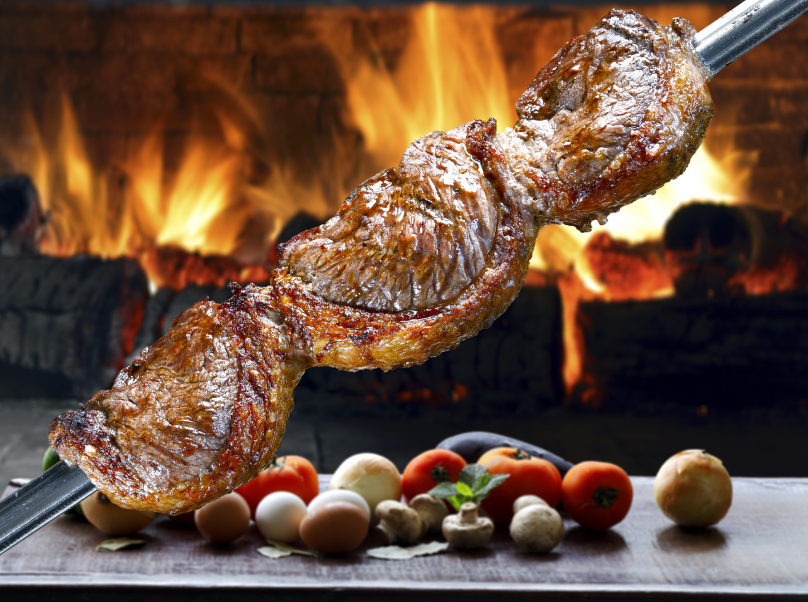
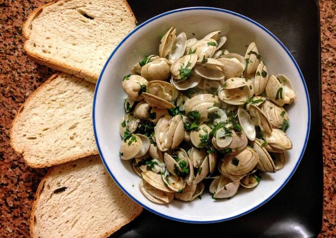
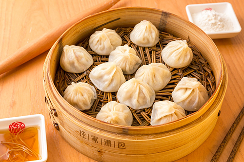
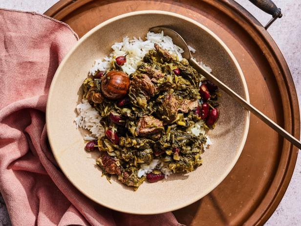

El curry es uno de los platos más populares de Japón. Suele servirse junto con arroz y tonkatsu u otros acompañamientos —arroz al curry —, pero también existen platos basados en curry que no utilizan arroz —como karē udon o karē-pan —, si bien no son tan populares como el curry con arroz.

PICAÑA DE BRASIL
Se trata de un corte de carne de bovino típico de Brasil. Se dice que su nombre proviene de una vara que usaban los ganaderos de Matto Grosso y Rio Grande do Sul para dirigir el ganado, esta vara tenía una punta de hierro que era usada para arrear el ganado picándolo en la región lumbar, de allí pasó a llamarse a eso zona de la vaca picanha. Las formas de prepararlas son muchas, aquí una de las versiones que encontrarás en Brasil.

ALMEJAS AL BULHÃO PATO, DE PORTUGAL
Las almejas al Bulhão Pato son un plato típico de la cocina portuguesa, particularmente popular en la región de Estremadura, una zona costera famosa por sus productos de mar de calidad. Este plato se puede encontrar en marisqueiras y cervejarias.

TANG BAO, DE CHINA
Tang bao se trata de una preparación culinaria típica de la cocina china. Consiste en una sopa servida como relleno en el interior de un baozi típico de Jingjiang, China. La segunda versión es más moderna, y consiste en absorber el contenido líquido de la sopa mediante una paja insertada en su parte superior, la cáscara que sirve de contenedor y que forma parte de la pasta se suele comer a posteriori.

GHORMEH SABZI
Qormeh sabzi o khoresht sabzi es un estofado tradicional de la cocina persa a menudo denominado como el plato nacional de Irán. El principal ingrediente es una mezcla de hierbas aromáticas salteadas, entre las que se incluyen el puerro, el perejil, las espinacas y el cilantro.